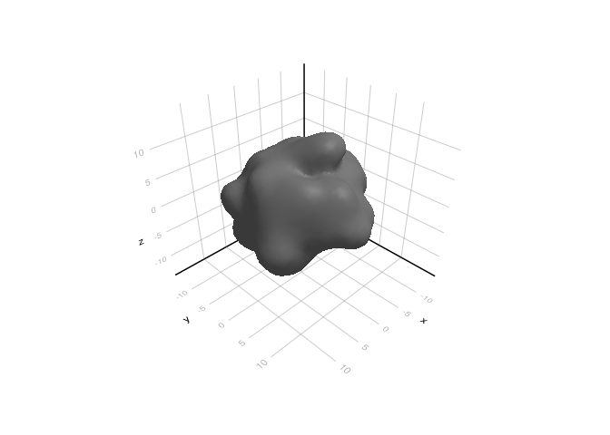
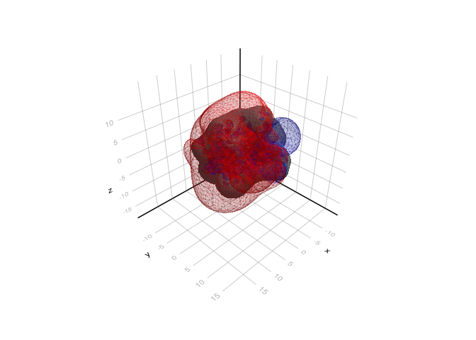

Protein electrostatics
In this tutorial, we apply NESSie’s nonlocal boundary element method (BEM) to a real protein structure. We’ll solve the nonlocal electrostatics problem for the protein 2LZX, compute the resulting electrostatic potential on a 3D grid, and visualize the positive and negative potential isosurfaces.
using NESSie.BEMusing CairoMakieimport GeometryBasicsmodel = Format.readhmo(nessie_data_path("benchmark/2lzx-5k.hmo"))bem = solve(NonlocalES, model; method = :blas)f, ax, plt = mesh(GeometryBasics.mesh(model); color = :gray)
We read the protein structure from an .hmo file using Format.readhmo, which loads the surface mesh and embedded point charges in a single step. The electrostatic problem is then solved via the BEM with solve(NonlocalES, model). The resulting bem object can be used to evaluate the electrostatic potential anywhere in space.
The protein surface is rendered in gray to give context for the potential visualization that follows.
gridsize = 40box = Rect(model; padding = 6.0)x = range(box.origin[1], box.origin[1] + box.widths[1]; length=gridsize)y = range(box.origin[2], box.origin[2] + box.widths[2]; length=gridsize)z = range(box.origin[3], box.origin[3] + box.widths[3]; length=gridsize)Ξ = [[xi, yi, zi] for xi in x, yi in y, zi in z]We construct a uniform 3D observation grid covering the bounding box of the protein, with a 6 Å padding around it and 40 points along each axis. The total electrostatic potential — including both the molecular (Coulombic) contribution and the reaction field from the solvent response — is then evaluated at every grid point using espotential.
Finally, we use the Marching Cubes algorithm to extract isosurfaces at potential values of +0.3 V (positive potential, shown in blue) and −0.3 V (negative potential, shown in red). These isosurfaces provide an intuitive 3D view of the protein’s electrostatic landscape, highlighting regions where the potential attracts or repels ions.
using MarchingCubespot = espotential(Ξ, bem)mc1 = MC(pot; x, y, z)march(mc1, 0.3)isosurf1 = MarchingCubes.makemesh(GeometryBasics, mc1)mc2 = MC(pot; x, y, z)march(mc2, -0.3)isosurf2 = MarchingCubes.makemesh(GeometryBasics, mc2)mesh!(ax, isosurf1; color = :blue, alpha = 0.1)mesh!(ax, isosurf2; color = :red, alpha = 0.1)f